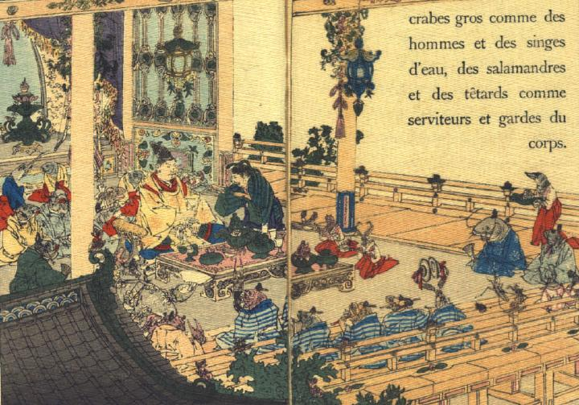

湖の底の御殿で、俵藤太をもてなす魚たち。俵藤太が中央に座り、その脇に彼をここまでいざなってきた男が控えている。周囲には公家装束の魚や女官装束の魚が取り囲んでおり、女官装束の魚たちはご馳走を運んでいる。画面の手間には、楽人姿の魚たちが銘々に楽器を奏でている。
著作者：J.Dautremer／出典：親書誌：U426_nichibunken_0118：Monseigneur sac de riz／日付：2006／資源識別子：U426_nichibunken_0118_0003_0000
Copyright (c)2010- International Research Center for Japanese Studies, Kyoto, Japan. All rights reserved.